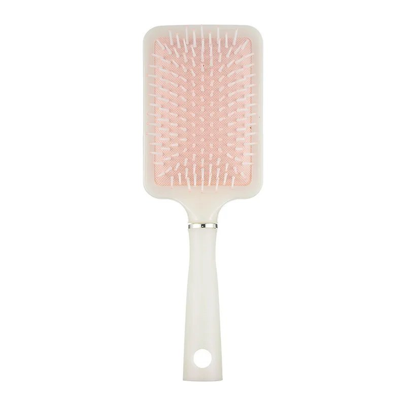
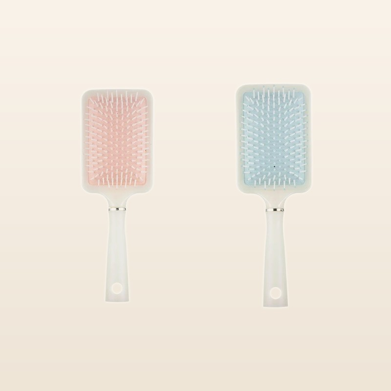
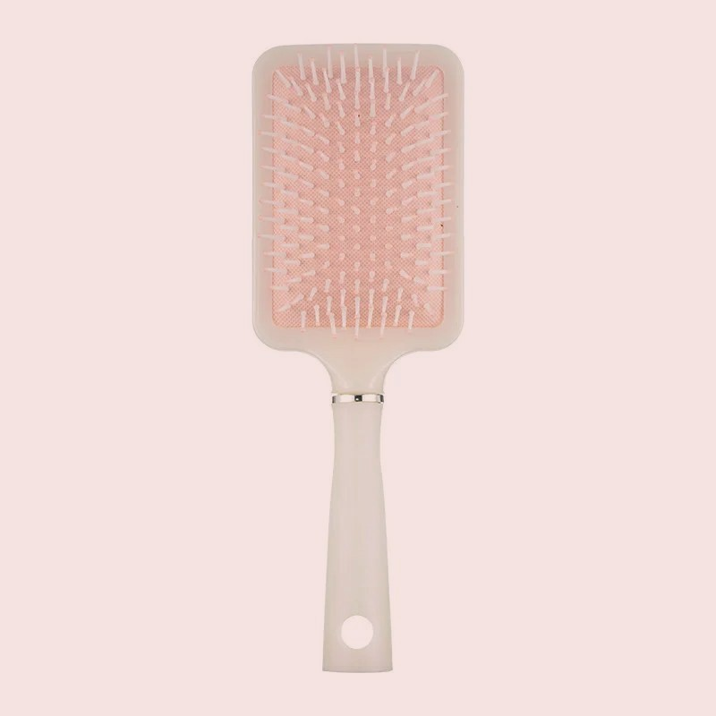
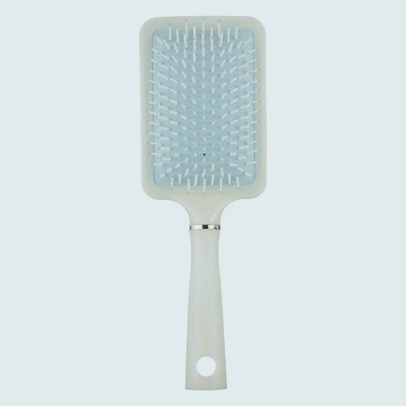

Pelo sin nudos, sin tirones.
El cepillo que desenreda sin tirones en mojado y en seco, para un acabado efecto perla, el look glass hair: cerdas flexibles que se deslizan entre los nudos.

Diseñado para deslizarse, no para tirar.
Cuatro detalles que notas desde el primer cepillado.
Cerdas flexibles anti-tirón
Cerdas que se flexionan ante los nudos en vez de arrancarlos. Desenreda sin tirones, también en pelo fino o rizado.
Acabado pulido
Desenredado suave como primer paso del look glass hair: pelo sin nudos, listo para tu producto de brillo.
En mojado y en seco
Perfecto para después de la ducha, cuando el pelo está más frágil, y para el retoque rápido en seco antes de salir.
Ligero y de viaje
Apenas pesa, cabe en cualquier bolso y no necesita pilas ni cables. Tu cepillo, a todas partes.
Tu ritual de 1 minuto

Empieza por las puntas
Desenreda primero de medios a puntas, con pasadas cortas. Las cerdas flexibles abren los nudos sin tirar de la raíz.

Sube hacia la raíz
Cuando las puntas estén sueltas, cepilla de raíz a puntas. En mojado o en seco: sin tirones, sin encogerte.

Pasada final
Termina con pasadas largas y lentas de raíz a puntas y, si quieres más brillo, añade tu sérum o aceite habitual.
Elige tu pack Vidria
Envío a península y Baleares con seguimiento; gratis a partir de 2 unidades. Disponible en 2 tonos: rosa y azul.
Sin letra pequeña
Devolución 14 días
Si no te convence, tienes 14 días naturales desde la entrega para devolverlo, como marca la ley. Te devolvemos el importe íntegro, envío incluido.
Pago seguro
Pasarela de pago cifrada. Nunca vemos ni guardamos los datos de tu tarjeta.
Atención cercana
Respondemos en menos de 24 h laborables en [email de contacto pendiente de dominio].
Lo que todo el mundo pregunta
¿Cuánto tarda el envío?
Entre 5 y 13 días a península y Baleares (no enviamos a Canarias, Ceuta ni Melilla). Recibirás el número de seguimiento por email en cuanto salga tu pedido. El envío es gratis a partir de 2 unidades; para 1 unidad, 2,95 €.
¿Sirve para pelo rizado o muy fino?
Sí. Las cerdas flexibles están pensadas para desenredar sin tirones en todo tipo de pelo: liso, ondulado, rizado, fino o grueso. En rizos muy cerrados recomendamos usarlo en mojado con tu acondicionador habitual.
¿Puedo usarlo con el pelo mojado?
Sí, es uno de sus puntos fuertes. El pelo mojado es más frágil, y las cerdas flexibles se flexionan ante los nudos en lugar de tirar. Ideal para después de la ducha.
¿Y si no me convence?
Tienes 14 días naturales desde la entrega para devolverlo y recuperar el importe íntegro, incluido el envío inicial. Escríbenos a [email de contacto pendiente de dominio] y te indicamos los pasos. Consulta la página de devoluciones.
¿De qué está hecho?
Cuerpo de material sintético ligero con acabado pulido y cerdas flexibles. Sin pilas, sin cables, sin complicaciones.
¿Es un tratamiento para el pelo?
No. Vidria es un cepillo: desenreda sin tirones y ayuda a conseguir un acabado pulido y brillante al peinar. No es un tratamiento capilar ni sustituye a tus productos de cuidado habitual.
Desenreda sin tirones.
Precio: 14,95 €. Envío gratis a partir de 2 unidades. Devolución 14 días.